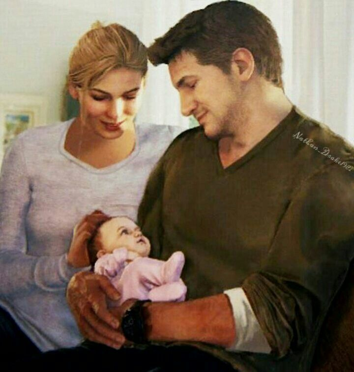
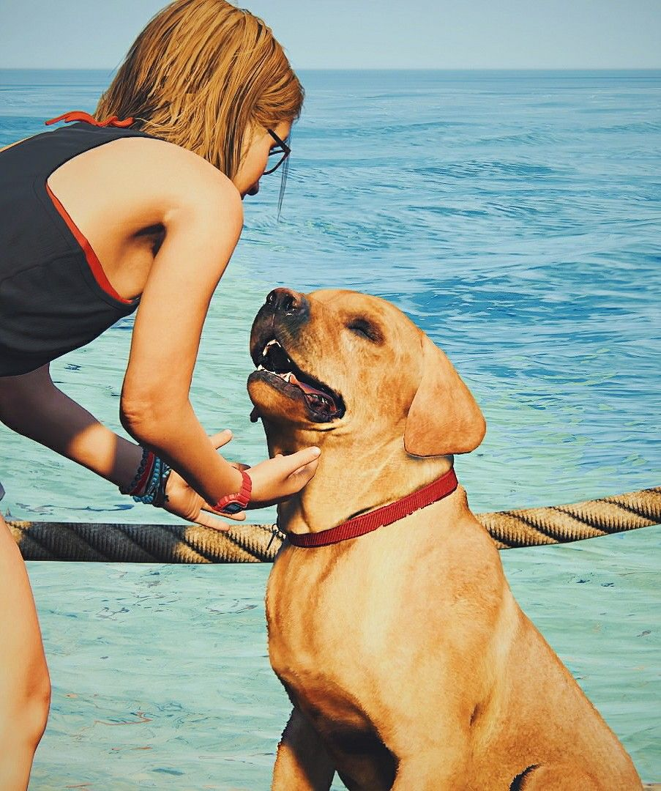
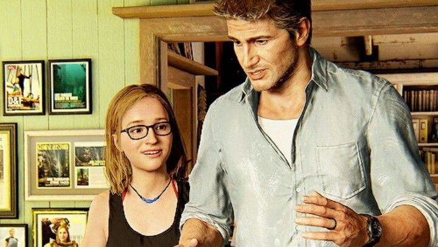
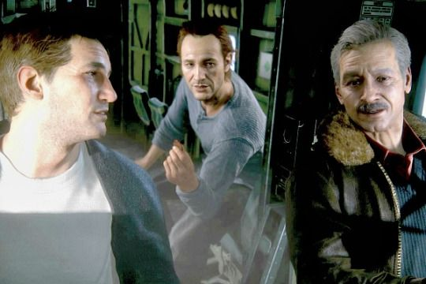

Qui di seguito, alcuni scatti di momenti tranquilli, alcuni in mezzo a travagliate avventure.
Un'istantanea con Elena dei primi momenti con Cassie, ora una vivace e sveglia ragazzina.
Cassie in compagnia della nostra cagna vicky (così chiamata in onore dello "zio" Sully).
Un momento di condivisione di saperi tra padre e figlia.
Ed infine uno scatto durante una spedizione con Sully e Sam.



